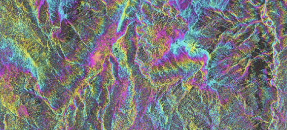
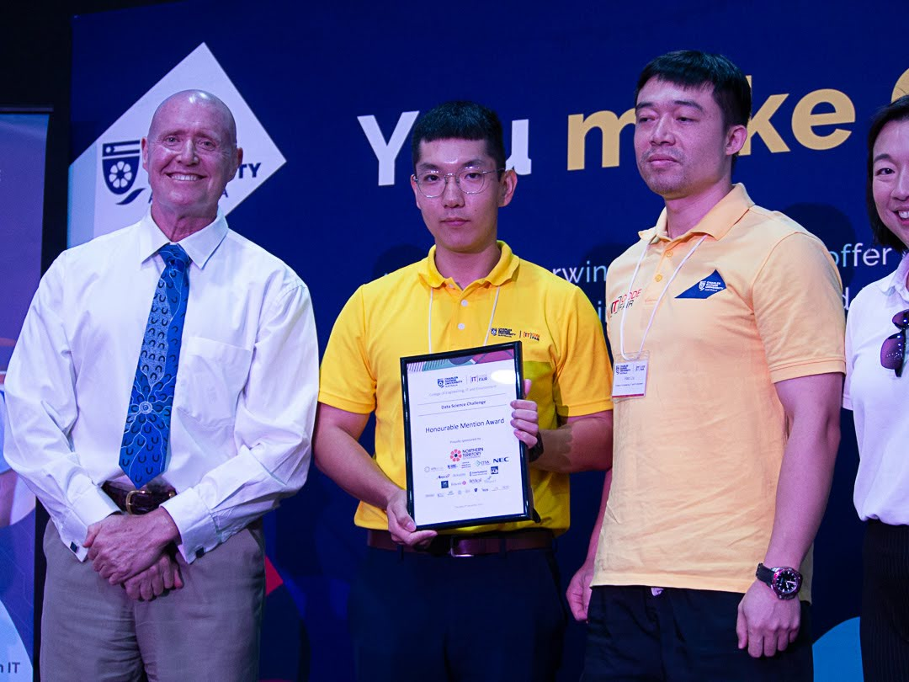
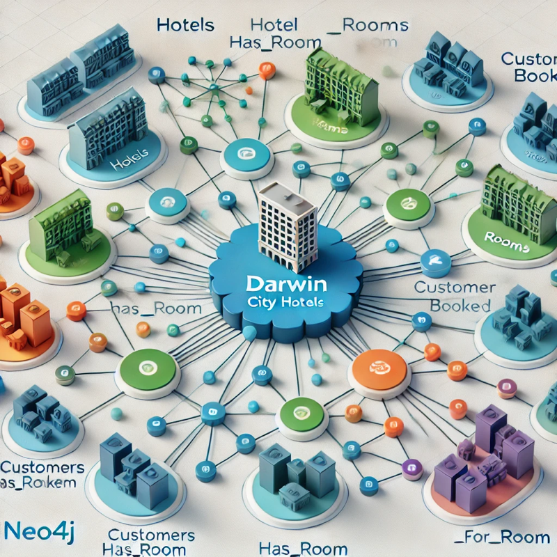

April 25, 2019
Apply on ENVI SARscape platform and sentinel-1 image data,
coupled with SRTM 30-meter precision DEM provided by NASA and Google earth high-resolution image data,
were used to monitor the slow surface deformation in Dongchuan urban area and its vicinity.


Provide the bush fire information through out the bush fire year.

Detect mangroves information around darwin eara.

Exploring patterns of global forest change using the Hansen dataset in Google Earth Engine.
Collected around 3000000 paper information and scope four parameters based on existing research transfer abstract, title,
DOI, and Citation, converting these text data into vectors by using sentence-transformer and build up an asemantic map in vectors format,
then train these data in BERT modelt.

Access the data: Selenium google webdriver
Scrape the html data: by locating the Xpath of the html data, get the subsections data and save them in txt file
Data cleaning: by NLTK word token, split the data into words then count the words.
Develop a simmple game by using python & Aseprite,may you have fun with it.

Work on the the crime trend and further experiment for crime rate prediction in the NT based on the Northern Territory Government of Australia Open Data
Northern Territory Economy.
.

Using SQLite to create a database for the relational model and visaulization by neo4j.